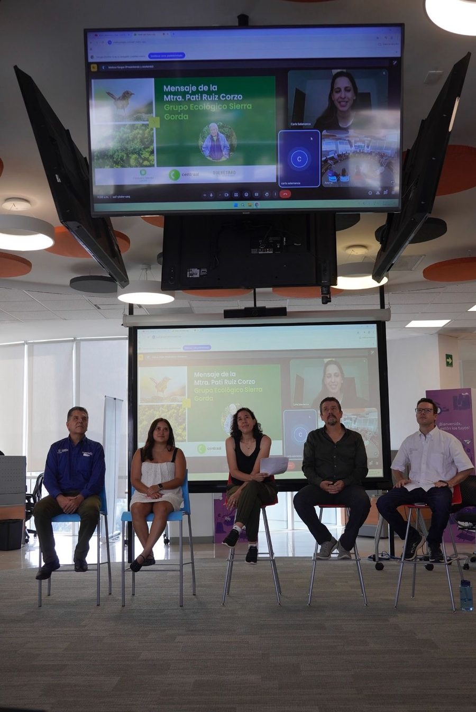
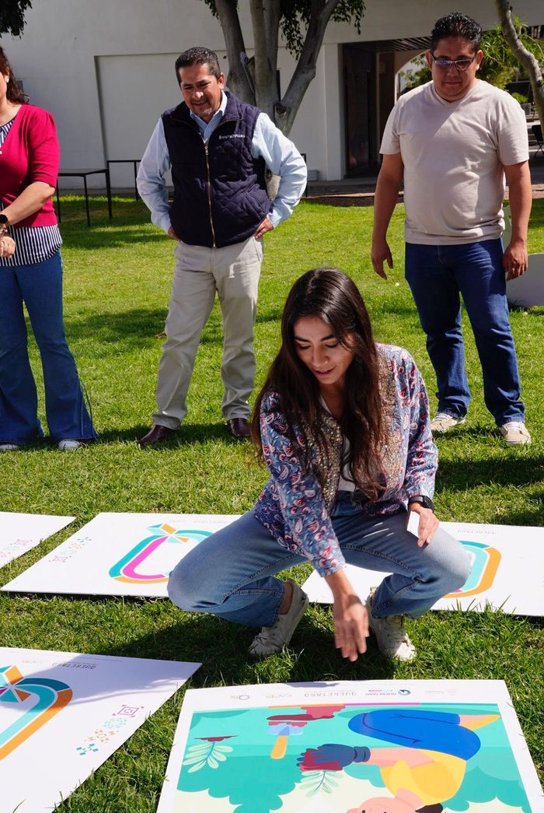
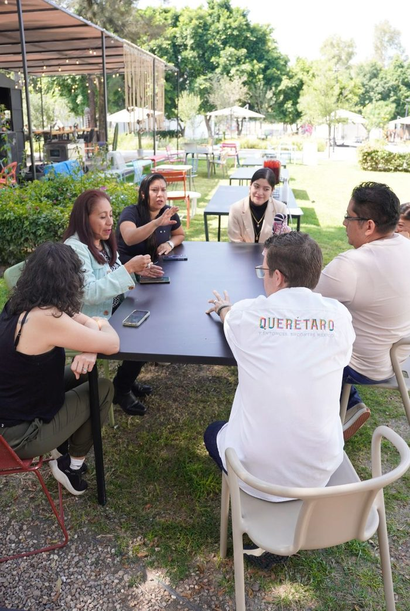

¿Qué es este Side Event?
En Soy Climatika impulsamos espacios que conectan a las personas con las soluciones que nuestro planeta necesita. Por ello, por segundo año consecutivo, somos coorganizadores, junto con la Secretaría de Turismo del Estado de Querétaro, de un Side Event en el marco de la Climate Week NYC, la iniciativa climática organizada por Climate Group que reúne a líderes de gobiernos, empresas, academia y sociedad civil de todo el mundo.
A través de este encuentro buscamos sensibilizar a la ciudadanía sobre la estrecha relación entre la sostenibilidad, el turismo y la conservación, promoviendo el diálogo, la educación y la colaboración como motores para construir destinos más resilientes, regenerativos y comprometidos con el futuro.

Un side event con impacto
Este side event reúne bajo un mismo techo a gobierno, empresas, academia y sociedad civil para hablar de turismo, sostenibilidad y conservación, con Querétaro como anfitrión de la conversación.
Junto con la Secretaría de Turismo del Estado de Querétaro, buscamos que cada edición deje algo concreto: alianzas, ideas y compromisos que se traducen en acción.
Momentos del evento


¿Quieres colaborar en el próximo Side Event?
Escríbenos si tu organización quiere sumarse a la conversación sobre turismo, sostenibilidad y conservación.
Hablemos por WhatsApp →